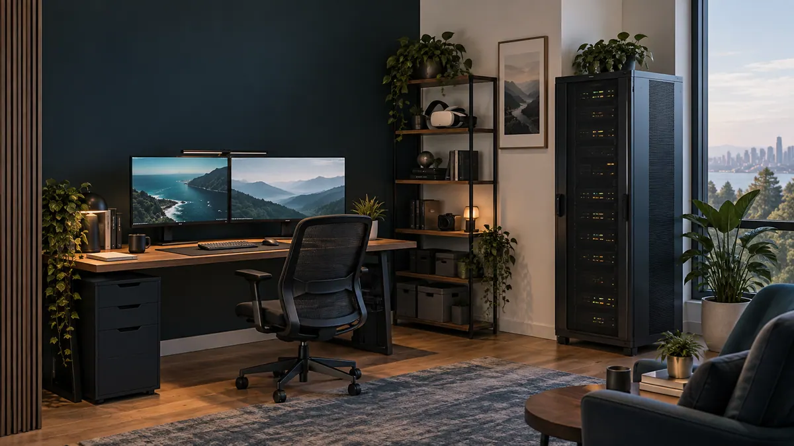
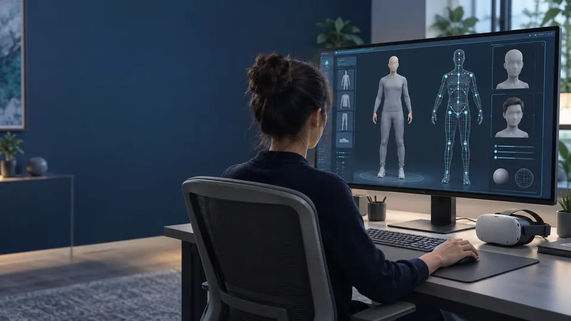

An original demonstration
A video, prototype walkthrough, or live demonstration tailored to the agreed pilot. The output should show what the software actually does under the recorded conditions.
Partner and sponsor opportunities
Kira Labs develops creative software and AI research independently in Newark, New Jersey. A focused equipment evaluation, cloud contribution, or sponsored demonstration can help move an early prototype toward its next verifiable result.
Built independently by Robert McMurrer.

The opportunity
A partnership starts with one module, one realistic workload, and a written scope. The contribution and proposed deliverables should make sense for both sides.
A video, prototype walkthrough, or live demonstration tailored to the agreed pilot. The output should show what the software actually does under the recorded conditions.
Hardware and settings, observed results, failures, and limitations. This can give a partner a concrete example of how its equipment or capacity supports an independent workflow.
Website, video, or social acknowledgement with clear sponsor disclosure and approved wording. Current audience figures will be supplied before any discussion of reach.
A small scope gives the partner direct access to the person building the work, with feedback and a review of whether another stage would be useful.
Current work
Development status determines what a pilot can promise. A measured result, an unfinished system, and a future concept each need their own description.
Private development build
A local filmmaking workflow combines generation, sound, editing, and persistent projects. Prior local evidence includes an actual 10.0625-second MP4 with sound at 832 × 480 and 16 fps.
Longer 60–90 second orchestration remains under review. Genuine 360° film production remains unfinished.
Controlled research prototypes
One narrow association benchmark compared an engineered learner with an indexed memory control. Both scored 24/24 on each of three seeds, with mean accuracy gain 0. Separate body mechanics checks accepted 24/24 cases.
The latest 14 eligibility arithmetic checks completed, with saved-evidence review pending. These results do not establish learning or efficiency superiority.
Connected body foundation
The prototype connects body regions and attachment anchors in a generic test body. Complete anatomy, skeleton, rigging, and animation remain unfinished.
The test body is separate from a Kira likeness. A pilot must use the current foundation rather than promise a finished avatar.
Experimental local work
Kira World explores digital places and continuing synthetic identities. New world authoring currently pauses while avatar work takes priority. Picture House explores an old movie palace for a future VR demonstration.
Production hosting, authentication, and a finished immersive film remain future work. Kira Labs makes no claim that current systems are conscious.

Robotics is a later area of interest. Healthspan Lab is research information software described on the public site, with no clinical diagnosis or medical device claim. These areas need a separate scope and appropriate readiness before a partner pilot.
Contribution options
Support can take the form of an evaluation, loaner, discount, credits, an in-kind contribution, or a sponsorship. Program eligibility and each partner’s terms determine what is possible.
Suitable compute equipment or a compatible matched memory upgrade for bounded video and research workloads. Agree the model, compatibility, use, ownership, and return terms before accepting equipment.
Discuss hardware supportA defined workload with recorded settings and a cost ceiling. Developer-program access or discounted evaluation time can be useful. Where remote-evaluation terms require it, use only approved public or anonymized benchmark material.
Discuss an evaluation pilotA headset, suitable peripherals, a demonstration kit, or a loaner for future avatar and environment evaluation. The current software status, accessibility needs, and supported hardware must define the pilot.
Discuss VR supportSpace, audiovisual access, a venue quote, or discounted use for a small event built around an honest prototype demonstration. Capacity, admission, accessibility, insurance, fundraising rules, and production needs require agreement.
Discuss a venueAirline credit, a fare discount, or agreed travel support for a demonstration, equipment visit, or research meeting. Share the confirmed purpose, route, dates, budget, and proposed video or sponsor credit before seeking a commitment.
Discuss travel supportA company contact, commercial sales route, rental option, or program application is a starting point for discussion. It does not establish a donation or sponsorship commitment.
A small first pilot
The first stage should fit the present prototype and the contribution available. Timing depends on readiness, access, and the agreed workload.
Name the demonstration, conditions, completion evidence, and limitations. Agree what the partner needs to learn from it.
Set the cost ceiling, support contribution, incidental costs, equipment ownership or return terms, and permission to publish. Define sponsor acknowledgement before the work begins.
Keep the original output and record hardware, settings, runtime, failures, and observed results. Share only the material agreed for disclosure.
Deliver the agreed report and demonstration, then decide whether a further stage would be useful. A pilot does not promise a product launch or a larger partnership.
The founder
Robert is an independent software and research founder in Newark, New Jersey. He builds Kira Labs across creative tools, memory research, avatars, and digital places.
The lab’s public site separates working prototypes from active development and future concepts. It is a useful place to explore the projects before choosing a partner discussion.
Start a conversation
Tell Robert which project and contribution fit your organization. A short discussion can establish the appropriate contact, current readiness, and a realistic next step.